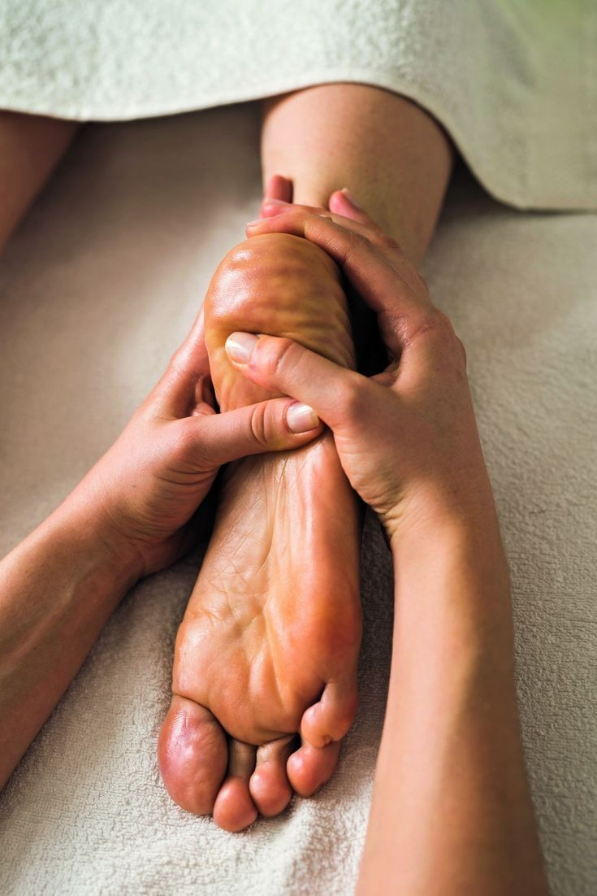

Masajista Deportivo en Valencia
Especialistas en recuperación muscular y optimización del rendimiento deportivo. Nuestros terapeutas especializados entienden las demandas del cuerpo activo y proporcionan tratamientos específicos para atletas y personas con estilo de vida dinámico en Valencia.
